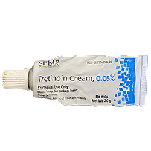

Skincare
makes me feel
confident
Come with me and take a peek into my skincare journey. Learn more about some of my favorite products that helped me to feel beautiful in my own skin for the first time in years.
Skincare
makes me feel
Come with me and take a peek into my skincare journey. Learn more about some of my favorite products that helped me to feel beautiful in my own skin for the first time in years.

For me, my skincare routine is a sign of peace, both in the morning and in the evening. In the morning, it wakes me up and prepares my skin for the day, signifying a time of peace and comfort before taking on the day. Above all else, it is a reminder that perfect skin isn't everything, but what is most important is feeling beautiful from the inside.

While my skin is a little damp, I pat a few drops of this vitamin C serum from Skin & Lab. Vitamin C has great brightening properties, but the only downsize that it will oxidize if exposed to sunlight.

In order to protect my skin barrier, I use Great Barrier Relief from Krave Beauty. Infused with tamanu oil, this serum protects and heals the skin from any irritations.

I use skin screen every single day (rain or shine!) to protect my skin from the sun, especially since I use a lot of active acids on my face that my cause sensitivity. My current favorite is this Sun Milk from Missha.
Healthy skin
does not mean
perfect skin.


I end my night by spending some time on self care. The last few minutes before going to bed are spent prepping my skin so that it can repair overnight, as well as a peaceful reflection of my day. I think it's important to reserve some time of your day in order to take care of yourself and well-being.

Two to three times a week, I use this AHA (Alpha Hyroxy Acid) toner from Krave Beauty to help exfoliate my skin and make way for new skin cells to form. This helps to remove any impurities and brighten the skin.

My favorite toner of all time is this one from Son & Park (I've been using it for 4 years!) It mildly exfoliates and brightens the skin, creating smoother skin texture, while being very gentle. Definitely one of my holy grail products!

I use this snail essence (yes, snail!) from COSRX to help mainstain moisture and repair any damaged skin. It's one of the very first products I incorporated into my skincare routine and remains to be a staple in my collection.

This skincare oil from Blume is one of the products that transformed my skin! This oil is made of all-natural ingredients, and although it's an oil, it doesn't leave my skin feeling greasy at all and has great acne fighting properties.
I use a tretinoin cream, which is essentially an acne cream, a few times a week (on days when I am not using my AHA toner). Tretinoin is a product that can be very drying, causing the skin to peel so that new skin can form. I get my prescription from my dermotologist.
The most beautiful
thing you can wear
is confidence.
On days where I wear makeup, I use this cleansing oil from The Face Shop before my regular cleanser. Oil cleansers break down makeup much easier and make for a better wash when paired with a foaming cleanser.

This green tea serum from Innisfree is another really good and hydrating product. I use this to prep my skin before makeup, as I find that it provides a nice and smooth base, while also making my skin feel plump.

I use this cleanser from Cetaphil everyday in the shower to wash my face, and have been using it for almost a decade!. I love it because it's a really gentle cleanser and does the job without making my skin feel dry after using it.
Acne patches are lifesavers when it comes to treating a pimple. These CORSX pimple patches are made from hydrocolloid, which create a moist enviroinment to promote healing. When used on a pimple, it pulls out all the impurities and quickens the healing of the pimple.